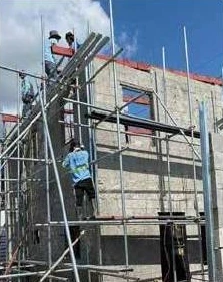
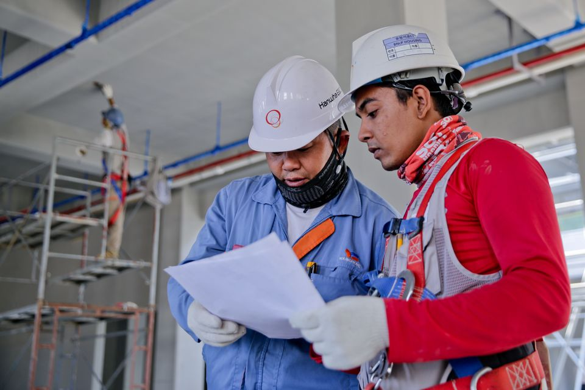
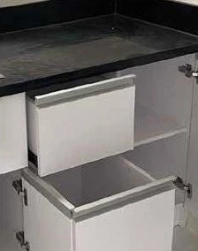
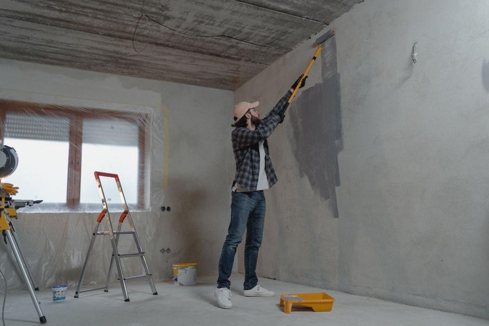
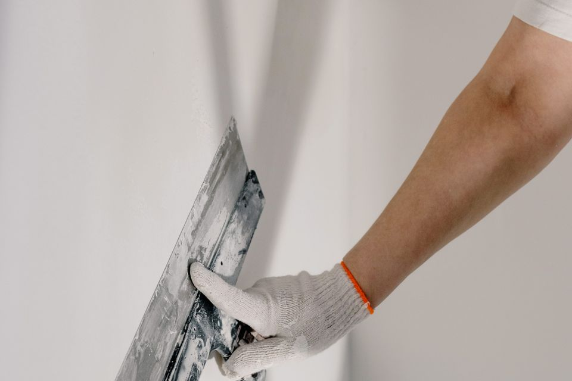
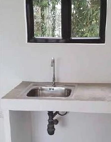

Re-roofing and roof installation
Install a new roof or replace an existing one based on site conditions and the project scope.
CONSTRUCTION SERVICES
From new construction to focused repairs and installations, explore the work GMP can take on in Cainta, Rizal, Pasig and Metro Manila.


Install a new roof or replace an existing one based on site conditions and the project scope.
Protect roof decks and other areas exposed to water with a waterproofing system suited to the site.



Illustrative photoBuild a house from foundation through finishing, based on the agreed plans and scope.
Carry out masonry and structural works according to the project requirements.
Prepare land for construction based on the site conditions and agreed scope.



Illustrative photo
Illustrative photoRefresh interior and exterior surfaces with the preparation and coating specified for the job.
Install tiles for floors and walls as specified for the space.
Install ceilings suited to the layout and finish requirements.
Install glass and mirrors for residential, commercial or institutional spaces.
Apply wood veneers to specified interior surfaces and finishes.
Build or install doors, cabinets and modular cabinets to suit the project.


Install lighting and electrical devices such as outlets based on the agreed scope.
Install or improve plumbing lines and fixtures as required by the project.